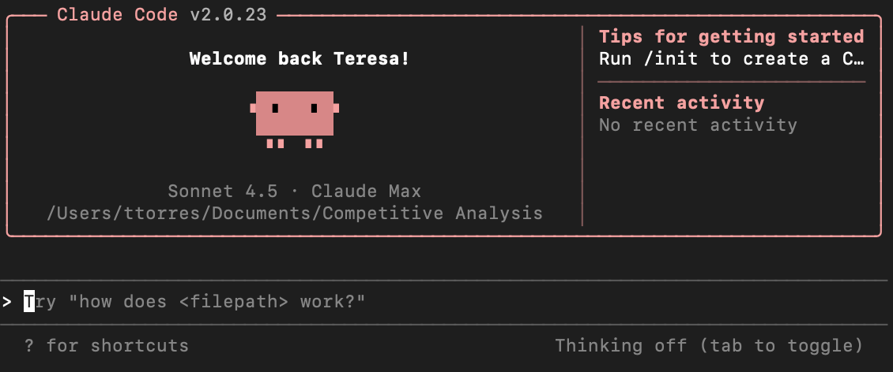

Claude Code 紹介
Claude Code は Anthropic が開発した開発者向けの AI プログラミング協働ツールです。チャットウィンドウで数行のコードを書くのとは異なり、Claude Code の核心的な目標は、あなたのプロジェクト全体を理解し、実際のコーディング、修正、リファクタリングのプロセスに参加することです。
Claude Code はコード生成器ではなく、プロジェクトを読み、コンテキストを理解し、制約を守る AI プログラミングパートナーです。
簡単に言うと：Claude Code は Claude のコマンドライン版であり、プログラミングシーン専用に設計されています。。
これはウェブページ上のチャットボックスではなく、あなたのターミナル（Terminal）で直接動作し、以下のことができます：
- プロジェクト全体のコードを読み取る
- ファイル間の関係を理解する
- コードファイルを直接修正する
- あなたの指示を実行し、アドバイスを提供する

能力の観点から見ると、Claude Code には主に次の3つの特徴があります：
- コンテキスト認識：単一のファイルだけでなく、プロジェクト全体の構造を理解します
- エンジニアリング指向：使い捨てのコードではなく、保守性、規律、テストを重視します
- カスタマイズ可能な動作：Skills（スキルパック）を通じて AI にあなたのルールを守らせます
たとえて言うと：
- Claude（ウェブ版）コンサルタントのようなもので、コードのスクリーンショットを撮ったりコピーしたりして渡すとアドバイスをくれますが、修正は自分で行う必要があります。
- Claude Codeあなたの隣に座っているパートナーのようなもので、プロジェクト全体を見て、コードの修正を手伝い、テストの作成や関数のリファクタリングまで手伝ってくれます。

Claude Code で何ができるのか?
Claude Code の核心的な能力は次の点にまとめられます：
1、コードの理解と説明
次のように質問できます：
- この関数は何をするものですか？
- なぜここでエラーが発生するのですか？
- このコードのパフォーマンスボトルネックはどこですか？
プロジェクトのコンテキストに基づいて説明してくれます。
2、複数ファイルのコンテキスト分析
単純なコード補完ツールとは異なり、Claude Code は以下を理解できます：
- この関数がどこで呼び出されているか
- このモジュールがどの他のファイルに依存しているか
- プロジェクト全体のアーキテクチャがどのようになっているか
3、エンジニアリングレベルのコード修正
次のように指示できます：
- var を使用している箇所をすべて let に変更して
- この関数を3つの小さな関数に分割して
- すべてのインターフェースにエラーハンドリングを追加して
アドバイスをするだけでなく、実際にコードを修正してくれます。
4、Skills（スキルパック）による機能拡張
Skills は Claude Code の最も強力な機能です。私たちは以下のことができます：自分のコーディング習慣やチームの規律を教えることで、私たちのやり方で作業させることができます。
例えば：
- チームではすべての関数にコメントを付けることを要求している
- API レスポンスは特定の形式に準拠する必要がある
- テストケースは境界条件をカバーする必要がある
これらの要件を Skills として記述すれば、Claude Code が自動的に守ってくれます。
Claude Code できない何ができるのか?
Claude Code が苦手なこと：
- 技術的な意思決定の最終判断を代わりに行うことはできない
- 生成されたコードに100%バグがないことを保証することはできない
- あなたが明確に説明していないビジネス上の意味を理解することはできない
- あなたがまったく理解していない状態でプロジェクトを全自動で引き継ぐのは適さない
成熟した使い方の心構えは、Claude Code に絶対的な正解ではなく、高品質な候補案を提供させることです。
Claude Code の核心的価値
Claude Code の核心理念：代替ではなくコラボレーション
Claude Code は開発者を追い出そうとしているのではなく、その設計理念は非常に明確です：
- 人が担当するのは：目標、制約、判断、美的感覚
- AI が担当するのは：実行、分析、比較、反復作業
プログラミング初心者へ：学習のハードルを下げる
初心者の場合、最もつらいのは次のようなことかもしれません：
- 他人のコードが理解できない
- なぜエラーが出るのかわからない
- 良いコードがどのようなものかわからない
Claude Code なら以下のことができます：
- わかりやすい言葉でコードを説明する：このコードの意味は、まずユーザーがログインしているかを確認し、ログインしていなければログインページにリダイレクトする、というものです
- デバッグを手伝う：ここでエラーが出るのは変数名のスペルミスが原因です。正しくは
usernameではなくusrname - より良いコードの書き方を教える：この関数は長すぎるので、検証、処理、返却をそれぞれ担当する3つの小さな関数に分割できます
個人開発者へ：開発効率を向上させる
個人開発者の場合、次のような状況があるかもしれません：
- 一人でフロントエンドとバックエンドを担当している
- コードレビューをしてくれる人がいない
- 素早い試行錯誤と反復開発が必要
Claude Code なら以下のことができます：
- サードパーティライブラリの使い方を素早く理解するのを手伝う
- テストケースを自動生成する
- 混乱したコードのリファクタリングを手伝う
チームへ：規律を統一し、コラボレーションコストを下げる
チームで働いている場合、次のような問題に遭遇するかもしれません：
- 人によってコードスタイルが違う
- 新人の習得が遅く、同じ質問を繰り返ししてしまう
- コードレビューに時間がかかる
Claude Code なら以下のことができます：
- Skills を通じてチームの規律を統一する（全員が同じルールを使う）
- 新人がプロジェクトを素早く理解するのを手伝う
- コミット前にコード品質を自動チェックする
Claude Code はどんな人に向いているのか?
以下のような人に Claude Code をおすすめします：
プログラミング初心者
- プログラミングを学びたいが、コードが理解できずにいつも行き詰まっている人
- いつでも質問に答えてくれる先生が必要な人
個人開発者 / 起業家
- 一人でプロジェクトを進めており、素早い試行錯誤が必要な人
- 時間をコア機能に使いたいが、些細な問題で行き詰まりたくない人
バックエンド / フロントエンド / フルスタックエンジニア
- 開発効率を向上させたい人
- より良いコードの書き方を学びたい人
- 複雑なプロジェクトを素早く理解する必要がある人
技術責任者 / アーキテクト
- AI を使ってチームの規律を浸透させたい人
- 新人育成コストを下げたい人
適さないシーン
- プログラミングをまったく学びたくなく、要件を入力するだけで自動的にプロジェクトが生成されることを望む（AI はまだそこまでできない）
- 業務が高度に機密性の高いコードに関わっており、外部の AI サービスを使用できない
Claude Code と他の AI プログラミングツールの違いは?
ChatGPT、Cursor、GitHub Copilot についても聞いたことがあるかもしれませんが、それらと Claude Code の違いは何でしょうか？
Claude Code vs ChatGPT
| 観点 | ChatGPT | Claude Code |
|---|---|---|
| 使用方法 | ウェブチャット | コマンドラインツール |
| コード理解 | 手動で貼り付ける必要がある | プロジェクト全体を自動で読み取る |
| ファイル修正 | アドバイスを提供し、自分で修正する | ファイルを直接修正できる |
| 適したシーン | 質問、概念の学習 | 実際のプロジェクト開発 |
Claude Code vs Cursor / Copilot
| 観点 | Cursor / Copilot | Claude Code |
|---|---|---|
| 動作方式 | エディタ内での自動補完 | コマンドラインでの対話形式 |
| 適したシーン | コード作成時のリアルタイム提案 | 理解、リファクタリング、アーキテクチャレベルの修正 |
| 学習コスト | 低い、すぐに使える | 中程度、コマンドを学ぶ必要がある |
簡単なまとめ：
- Copilot/Cursor:書きながら補完、スマート入力法のように
- Claude Code:対話式コラボレーション、高度なパートナーのように
- ChatGPT:汎用アシスタント、コンサルタントのように
Claude Code の利点：
- プロジェクト全体の理解力がより強い
- Skills を通じて動作をカスタマイズできる
- 旧コードの理解や大規模リファクタリングなどのシナリオにより適している
Claude Code の限界：
- Copilot ほど意識せずに使えるわけではない（自ら呼び出す必要がある）
- 学習曲線がやや高い

クリックしてノートを共有
ノートはこの記事の内容を拡張したものである必要があります！
記事の投稿はこちらから
登録招待コードの取得方法
ノートを共有する前にログインが必要です！
登録招待コードの取得方法